ProjectNight.com
Wednesday Night Project Night, Page 2
Most recent Project Night followed by the previous Wednesday's, for this page....
27 June 2007: In front of Matt's shop. A summer thing.
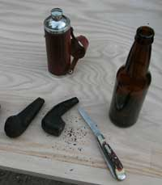
Actual projects were photographed. That was the project. Another successful Project Night. The Perfesser regailed the crowd with accounts of his recent scientific expedition to recover rare specimens of opalized wood from the wilds of Mid Montana, which he presented for our study and comparison with samples of Bowmore Scotch, unlabeled beer and Gamel Dansk.
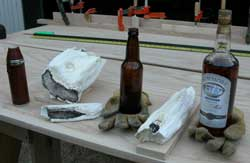
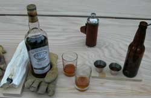
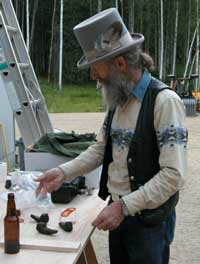
The security camera caught two Project Night team members actually working on projects, but they denied it.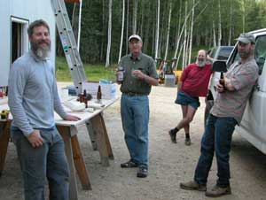
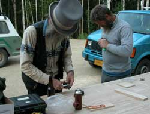
20 June: Upon receiving wild and exaggerated stories from our project material collection team, on a project material collection expedition, we sent the guy with the camera to Secret Canyon, Mid Montana, to verify the rumors, on a Wednesday, of course. We found one of the team members grubbing in some dirt and sand, looking for project material. He found some, much to our surprise. Opalized wood. Way pretty stuff.
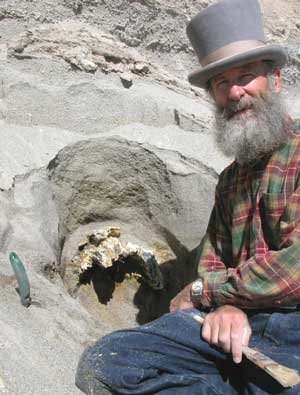
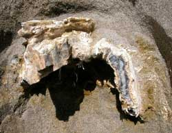
We will not mention the road that he did not know about until after he packed out two heavy loads of rocks for two miles each way each time. Not known for his intellectual acumen.
The outside of the wood (ah, rock) is soft pretty white powdery stuff that was previously wood. The shiny opal inside varied from white to brown to jet black.
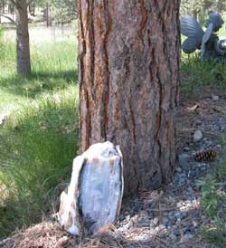
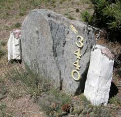
May: Whatdaya mean the ProjectNight.net website is getting lame. It is summer in Alaska. Go ahead. Try to fine enough people for a project night in Fairbanks. The Fairbanks people are wisely not in town in summer. They are out using the camping stoves they made at Project Night. The web slave is in Yakima Washington, finishing the Floating Island project. That is him on the island in the photo. He is leaning on the Osprey perch snag. The trees are yet to be planted. Then the island will be towed out to the anchor in the middle of the small lake.
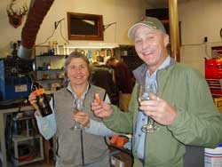
25 April 2007: Tim's Shop. Formal Project Night Team Project. Summer is upon us. Outdoor adventure time. Most adventures involve camping as part of the adventure, and packing stuff on one's back. Alaskan camping has been refined. One must carry a large gun and a lot of ammo, which are heavy, and a lot of mosquito dope, which is heavy, and a lot of alcohol, which is heavy, so we save weight on the stove. We make new stoves each spring. We make them from aluminum beer cans, which requires that we drink some beer, which causes some production flaws, which requires more stoves to be made, which requires drinking more beer. No problem.
The beer can camping stove design is online, which is a good thing because nobody can remember how to make them because we drink too much wine each winter.
The photos show the process. Fortunately beer and wine do not need cooking because we were not too sure if the Project Night Beer Can stoves would even boil tea water, even after we finished the entire team's summer stoves, and lit one up, and also tested the stoves.
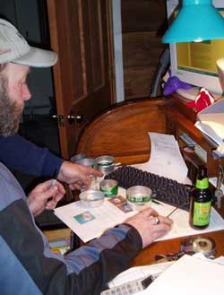
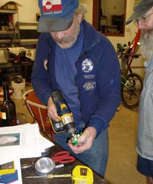
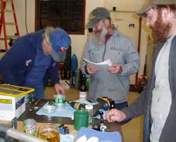
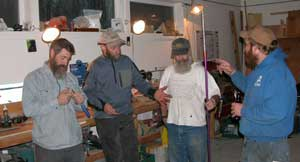
18 April: Matt's Shop. Before the official photographer thought enough to get his camera out of its case, the sail boat was hauled into the shop, the sail hoisted, the spars and rigging fixed, taken down, and the sail boat was hauled back out. Da Project Night Project Photographer aint at the top end of the organizational thinking chart.
Projects were completed. How does one get an aluminum tube out of a too tightly nested, somewhat age-corroded red aluminum tube, like the one in the photo? The shop techniques expert team drank no few beers over that one, and homdihoomed in profound detail, before one of the experts found a kind of dowel-like something, and a hammer, and tapped it out from the other open end. Then they had to find another project.
Oh, that sail boat was kind of a little fold up type for one person, but a sailboat.
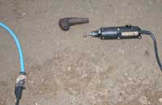
The giant sawdust-making by Old Number 7 band saw got up to full speed on some more 5.4 million year old lignitized wood that got whacked into smaller pieces.Then one of them got taken outside for the Dremel tool fine work with all the fine lignitized dust.
The shop refrigerator door handle mechanism was tested, repeatedly.
Some fine Robusto cigars and smooth Gamel Dansk graced the processes.
We expect more productivity from the next report.
11 April: Another Project Night Project Shop, for the moment. Matt's shop this time.
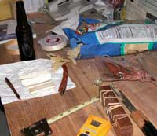
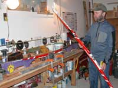
The usual suspects arrived, but a paucity of gourmet snacks. The fish strips were Yukon Kings. The beer bottles do not have labels for a reason. With the feds going ballistic to tax everything and summarily seize everyone's money without court reviews, to support the insatiable DemocanRepublicrat Regime's ego gratification wars, more people make their own beer, or at least save the expense of labels with idiot government warnings.
The weekend's skiing required the fresh wax project, performed on Mark's ski wax purple jig that predated certain super skinny skis with wider bindings, requiring some modification, as usual.
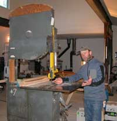
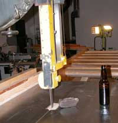
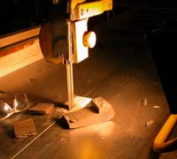
Matt's shop has Old Number 7 monster band saw, 3 phase, from a famous old commercial furniture shop, which took longer to bring up to speed and let coast back down to stop, than required for the little cuts on another 5.4 million year old piece of lignitized wood.
The high quality table saw / jointer / planner / router / shaper / and other things machine was discussed in full, but the Rosewood Zitochi sword scabbard project was delayed by the discussion of the tool to finish the project, and the beer required for the discussion.
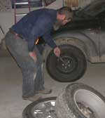
We kept Matt over in the corner changing the studded tires on the car, when he was not expounding on various of his way-cool wood working tools in the other corners. That project actually got done, despite the diverse discussions of the usual outrageous activities.
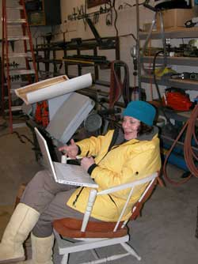
4 April. New Project Night Project Shop, for the moment. Tim's shop.
Present for the evening was a visiting director from Montana, directing from the computer data base of auto-cad designs for Wednesday Night Projects.
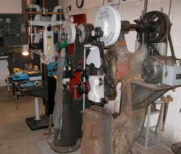
Mark, of Mark's Shop, is in Juneau working on his sail boat and the new Mark's Shop at Juneau.
The local Project Night crew worked on profound projects...
Frontier Red wine by Fess Parker Vineyards. That is Fess Parker of Davy Crockett and Daniel Boon shows fame. Fess makes good wine.
A bottle of Spellbound Cabernet also assisted in production efficiency.
Well of course Gamel Dansk heightened sensory perceptions.
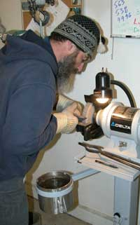
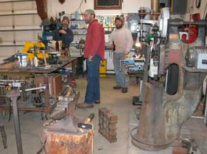
Tim's Shop is primarily set up for wrought iron work, and anything else these Alaskans can imagine. You might notice the proto type of the new wine bottle corkscrew design made at Tim's Shop, for the big bottles. The screw was turned on his modified other-machine-parts machine for corkscrews. The handle design has yet to be hammered into the iron.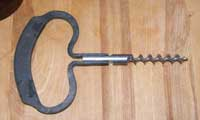
Check out the spiffy heavy gauge stainless steel quenching pot, below the grinder, Tim made at a previous Project Night in Mark's Shop.
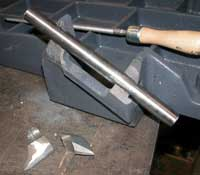
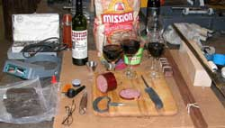
Yes, broken cast iron pieces in need of welding. Welding cast iron is, ah, a classic welding project.
A little caribou sausage, zitochi sword project material and the usual clutter.
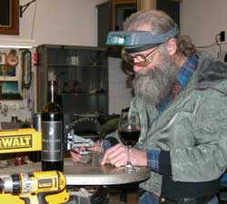
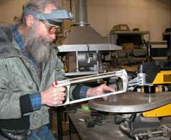
The goofy guy working on another small piece of 5 million year old lignitized wood tried using the pricey new DeWalt power jig saw, then tried the way good wine, then used the hand powered hack saw. Normal project process.
There was discussion of just how corrupted (dishonest, malicious) the courts have become under the politically appointed pocket lawyers that the slimy DemocanRepublicrat Regime dumps into lucrative judge jobs, heightening the need for juries to ignore contrived judicial instructions, and determine court cases based on plain common sense above the government's maze of self-serving laws, but then everybody except government-indoctrinated sorts already knows that, so the discussion quickly advanced to metric equivalents of carbon content in forged iron, as usual.
Page 3 July 07 -------- October
07
Page 4 October 07 ---- December
07
Page 5 December 07 -- February
08
Page 6 February 08 --- March 08
Page 7 March 08 ------ October
08
Page 8 October 08 ---- January
09
Page 9 February 09 --- November
09
Page 10 November 09 - Present
Page 1 November 06 -- March 07